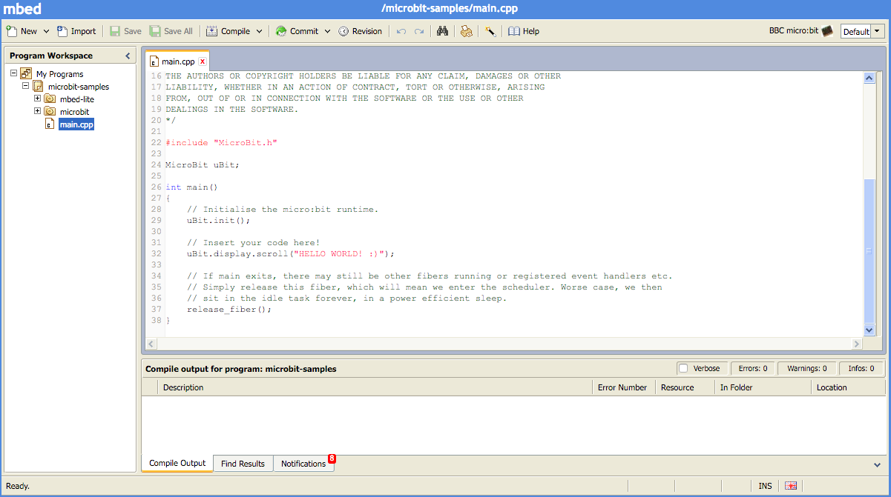

Môi trường lập trình C/C++ trên web có hỗ trợ bộ runtime#
| Trình biên dịch online | Mô tả |
|---|---|
 |
ARM mbed có một môi trường phát triển tích hợp (IDE) online để phát triển code với C/C++ tại địa chỉ http://developer.mbed.org. Nó cho phép dùng miễn phí và bo BBC micro:bit là một trong các nền tảng được hỗ trợ chính thức. Trình online IDE này cung cấp một giao diện đơn giản để viết, biên dịch và chia sẻ các dự án kiểu như micro:bit DAL, dựa trên bộ phát triển mbed SDK. |
Các bạn của chúng tôi cũng dùng bộ runtime#
| Ngôn ngữ lập trình | Mô tả |
|---|---|
 |
Bộ Microsoft Programming Experience Toolkit (PXT) cung cấp một trải nghiệm lập trình dựa trên JavaScript. Trải nghiệm này có đủ cấp độ được xây dựng sẵn, từ bộ soạn thảo đơn giản dựa theo các khối, đến trình soạn thảo bằng văn bản trong trình duyệt web với chức năng tự động hoàn thiện từ (auto-completion) và tự động sửa lỗi mạnh mẽ, cho đến hẳn một môi trường phát triển chuyên nghiệp, Visual Studio Code. |
| Với giao diện chạm của nó, Touch Develop được thiết kế cho các thiết bị di động với màn hình chạm. Nó cũng có thể được dùng với một máy tính PC, bàn phím và con chuột. Touch Develop giới thiệu một ngôn ngữ kịch bản kiểu tĩnh với bộ soạn thảo hướng theo cú pháp (syntax-directed). Nó có thể được dùng để tạo ra các apps trên web có thể chạy trên bất cứ nền tảng nào. | |
 |
Chương trình Block Editor là một trình soạn thảo bằng đồ họa và thích hợp để giới thiệu về lập trình cấu trúc bằng các khối lệnh kéo thả có thể tự bám (snap) vào nhau. Bạn cũng có thể chuyển đổi một kịch bản Block Editor sang một đoạn mã Touch Develop để giúp chuyển tiếp sang kiểu lập trình bằng văn bản. |
 |
Code Kingdoms là một bộ soạn thảo đồ họa JavaScript. Nó có giao diện kéo thả nên dễ học đối với người mới bắt đầu. Bạn cũng có thể thay đổi từ trình soạn thảo đồ họa sang một trình soạn thảo dùng văn bản để giúp việc chuyển tiếp sang lập trình bằng văn bản khi kỹ năng lập trình của người học tiến bộ lên. |
 |
MicroPython là một bộ soạn thảo hoàn toàn bằng văn bản, perfect cho ai muốn đẩy kỹ năng lập trình của họ tiến xa thêm. Một bộ ‘snippets’ chọn lọc được cung cấp để giúp việc điền đầy đủ lệnh (auto-complete) cho các tác vụ khó hơn, và một kho các hình ảnh và âm nhạc được tạo sẵn để giúp bạn trong khi lập trình. |
mbed#
ARM mbed có một môi trường phát triển tích hợp (IDE) online để phát triển code với C/C++ tại địa chỉ http://developer.mbed.org. Nó cho phép dùng miễn phí và bo BBC micro:bit là một trong các nền tảng được hỗ trợ chính thức.
Trình online IDE này cung cấp một giao diện đơn giản để viết, biên dịch và chia sẻ các dự án kiểu như micro:bit DAL, dựa trên bộ phát triển mbed SDK.

Bắt đầu với mbed.org#
Hello World trên mbed.org#
-
Tạo một tài khoản trên trang developer.mbed.org.
-
Vào trang nền tảng micro:bit và thêm bo mạch micro:bit vào trình biên dịch của bạn bằng cách click vào nút “Add to your mbed compiler” ở thanh công cụ bên tay phải.
-
Đến trang của dự án microbit-samples, và click vào nút
Import this programcho dự án đó. Môi trường phát triển online IDE sẽ mở ra. -
Hoàn tất việc nhập vào dự án, rồi chọn nó ở thanh công cụ bên cạnh và click vào nút
Compile. Việc biên dịch chương trình sẽ bắt đầu. Lần biên dịch đầu tiên sẽ tốn nhiều thời gian hơn những lần tiếp theo. -
Trình duyệt web của bạn sẽ hỏi bạn để tải về một tập tin. Lưu tập tin này vào máy tính của bạn, rồi kéo thả nó vào thư mục của bo mạch micro:bit. Quá trình sao chép sẽ làm cho đèn LED màu cam ở mặt sau micro:bit nhấp nháy; nó sẽ ngưng nháy khi chương trình đã được tải xuống bo mạch thành công.
-
Khi việc sao chép kết thúc, ổ đĩa micro:bit sẽ khởi động lại và ngắt kết nối khỏi máy tính của bạn. Vào thời điểm này, chương trình của bạn bắt đầu chạy!
Có một hướng dẫn cụ thể hơn để sử dụng micro:bit trong mbed trên trang wiki về mbed của Đại học Lancaster.